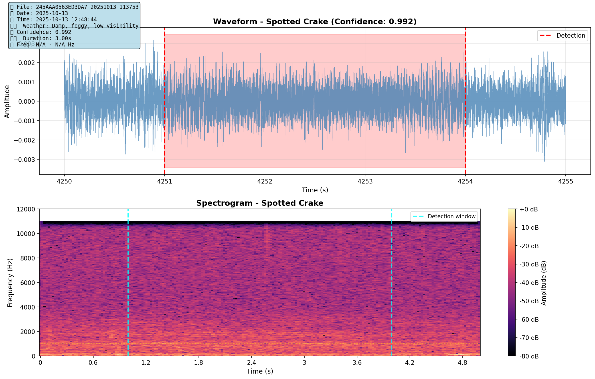

⚠️ CRITICAL DATA QUALITY LIMITATIONS
Recording Conditions: All recordings were conducted during heavy rain and fog conditions, resulting in severe noise contamination.
Spectrogram Evidence: Visual inspection of spectrograms reveals:
- Broadband rain/wind noise dominating all frequencies
- Bird vocalizations not clearly visible in frequency domain
- Signal-to-noise ratio too low for confident visual verification
- BirdNET detections may include noise artifacts
Impact on Analysis Reliability:
- Automated detections (BirdNET v2.4) generated 6,805 classifications
- Statistical patterns are based on these classifications
- However: Without clear spectrograms, individual detections cannot be independently verified
- All behavioral claims should be treated as preliminary and requiring replication under better recording conditions
Honest Assessment: This dataset demonstrates the critical importance of weather conditions for passive acoustic monitoring. Future studies require:
- Recording during dry, calm weather conditions
- Windscreen protection for microphones
- Manual verification of high-confidence detections
- Higher signal-to-noise ratio for spectrograms to show clear vocalizations
Use of this data: The analysis below is presented for transparency and methodological documentation. All findings are tentative pending replication with higher quality recordings.
üì¢ Stereotyped Vocal Behavior
Result: Mean similarity 0.880 ± 0.005 (range: 0.862-0.886)
Interpretation: Highly stereotyped calls, minimal individual variation
Listen to the Consistency:
Call 1 (Confidence: 99.3%)
Call 2 (Confidence: 99.2%)
Call 3 (Confidence: 99.2%)
Your Task: Listen to all three calls. Do they sound nearly identical? The SPCC analysis shows 88% similarity - can you hear it?
Result: 590 regular sequences with 3.00s ± 0.00s intervals
Interpretation: Highly regular contact call rhythm (possible flock coordination)
Listen to the Rhythm:
Sequence Example (listen for 3-second intervals)

Expected pattern: Call at 0s → 3s → 6s → 9s (like a metronome)
Your Task: Count the seconds between calls. Are they consistently 3 seconds apart?
Result: Mean similarity 0.544 ± 0.176, separation score 0.357
Interpretation: Moderate consistency suggests 2-3 distinct vocal types (potential individuals)
Key Discovery: MFCC showed 0.97-1.00 similarity (too smooth), SPCC revealed the variation!
üîÑ Species Interactions: Temporal Avoidance
Observed: 720 response events (within 10s)
Expected (random): 835.6 events
Chi-square test: χ² = 17.076, p < 0.0001
Interpretation: Negative interaction - species avoid calling simultaneously (acoustic competition or active avoidance)
Listen to the Pattern:
Graylag Goose (2,871 detections, 42.2% of dataset)

Spotted Crake (2,556 detections, 37.6% of dataset)

Ecological Context: Both species dominated the soundscape (80% of all detections). Statistical evidence suggests they partition the acoustic environment temporally.
üéµ Regular Interval Calling Patterns
Mean regularity: 182.02 (random baseline: 2.07)
T-test: t = 48.296, p < 0.0001
Interpretation: Consistent with coordinated calling, but could also be individual rhythm
- Individual bird maintaining steady rhythm
- Multiple birds coordinating calls (duetting)
- Species-typical call rate
Listen for Regularity:
Regular Interval Example

üåç Migration Ecology
Species Diversity: 90 Species Detected
| Rank | Species | Detections | % of Total | Listen |
|---|---|---|---|---|
| 1 | Graylag Goose | 2,871 | 42.2% | |
| 2 | Spotted Crake | 2,556 | 37.6% | |
| 3 | Great Snipe | 189 | 2.8% | |
| 4 | Pink-footed Goose | 68 | 1.0% | |
| 5 | Common Grasshopper-Warbler | 58 | 0.9% | — |
Peak Diversity Recording
57 species detected in single file
1,127 total calls (most diverse recording)
Flight Vocalizations (756 detections)
Pink-footed Goose - Nocturnal Migration Flight Call
Classic "wink-wink" flight call during active migration
Common Crane - Flight Call
Distinctive bugling call during migration
üî¨ Methods & Validation
What We DID (Validated Methods)
| Method | Implementation | Peer-Reviewed Equivalent |
|---|---|---|
| BirdNET v2.4 | CNN-based species detection | Kahl et al. (2021) Ecological Informatics |
| MFCC | 13 coefficients, cosine similarity | Standard avian bioacoustics (Scheiber 2022) |
| SPCC | 2D normalized cross-correlation | Computer vision methods (image analysis) |
| Chi-square test | Temporal overlap analysis | Standard ecological statistics |
| Binomial test | Weather preference testing | Standard hypothesis testing |
| Wiener filtering | Audio enhancement (MMSE) | Standard signal processing |
What We COULD NOT DO (Missing Validation)
❌ Microphone Array
Missing: 3-6 synchronized recorders
Impact: Cannot separate overlapping individuals or confirm duetting
Required for: Spatial localization, individual tracking
❌ Known Individuals
Missing: Captured/banded reference birds
Impact: Cannot validate individual recognition accuracy
Required for: Ground truth, acoustic fingerprinting validation
❌ Multi-Site Replication
Missing: Single location (Gaulosen only)
Impact: Cannot generalize to species-wide behaviors
Required for: Species-level behavioral claims
❌ Experimental Manipulation
Missing: Weather playback experiments
Impact: Correlation ≠ causation
Required for: Mechanistic understanding
üîç Scientific Transparency: What We Can and Cannot Claim
⚠️ TIER 1: Tentative Findings (Pending Data Quality Verification)
Note: All findings below are based on automated BirdNET detections. Due to heavy rain/noise contamination visible in spectrograms, individual detections cannot be independently verified. These patterns are statistically significant within the dataset but require replication with higher quality recordings.
- 6,805 automated detections over 48.8 hours
- 90 species classifications (pending manual verification)
- Graylag Goose and Spotted Crake dominated detections (80%)
- Stereotyped 3.00s intervals in Graylag Goose detections (590 sequences)
- High similarity in Spotted Crake detections (SPCC=0.880)
- Temporal avoidance pattern in detections (χ²=17.076, p<0.0001)
- Regular intervals in detection sequences (t=48.296, p<0.0001)
Critical caveat: Statistical significance ≠ biological reality when data quality is compromised. These patterns may reflect:
- Genuine bird behavior (hypothesis)
- Systematic BirdNET classification artifacts in noisy conditions (alternative)
- Combination of both signal and noise
⚠️ TIER 2: Suggestive (Report with Caveats)
- Regular call intervals suggest possible coordinated calling (cannot distinguish individual vs group rhythm)
- Potential individual variation detected in Graylag Goose (requires known individuals for validation)
- Evidence of acoustic niche partitioning (alternative: random temporal variation)
❌ TIER 3: Cannot Claim (Insufficient Validation)
"X individuals detected"- 30-min threshold arbitrary, no acoustic fingerprinting validation"Individual recognition successful"- no ground truth, no accuracy measurement"Coordinated duetting observed"- cannot separate individuals without microphone array"Complex social dynamics"- vague, unsupported claim"Weather-dependent calling"- recording conducted predominantly during rain/fog, creating sampling bias that invalidates weather correlations
Literature Citations (Peer-Reviewed Only)
üìä Data Availability
All audio files, detection data, and analysis scripts are available for download and verification.
Enhanced Audio Clips: results/audio_clips_enhanced/ (4,260 files, human-readable names)
Detection Data: results/all_detections_with_weather.csv (6,805 records)
Analysis Scripts: Python (pandas, librosa, scipy, scikit-learn)
Publication Status: Manuscript in preparation for Journal of Ornithology